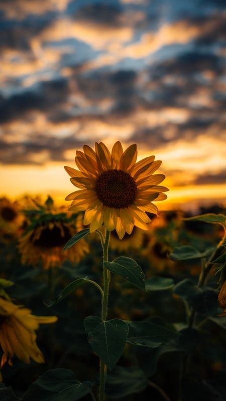

ดอกทานตะวันมีประวัติ ที่มาและความสำคัญทางเศรษฐกิจอย่างไร ดอกทานตะวันมีกี่สี แต่ละสีมีความหมายว่าอย่างไร การปลูกและการดูแลทำอย่างไร มีลักษณะเฉพาะอย่างไรและมีประโยชน์อย่างไร เรามาทำความรู้จักกับดอกทานตะวันกันดีกว่า ถ้าเพื่อน ๆ สงสัยก็ไปดูกันได้เลย
เมื่อ 400 ปีก่อน นักประวัติศาสตร์ชื่อ Rembert Dodoens ได้เคยศึกษาค้นหาที่มาของทานตะวันจนทำให้รู้ว่า ทานตะวันเป็นพืชท้องถิ่นของทวีปอเมริกากลางและใต้ที่ชาวพื้นเมืองนิยมปลูกและใช้เมล็ดเป็นยาสมุนไพรมานานแล้ว การขุดพบซากแห้งของทานตะวันในบริเวณลุ่มน้ำมิสซิสซิปปีในแอริโซนาและนิวเม็กซิโก แสดงให้นักมานุษยวิทยารู้ว่าชาวอินเดียนแดงในทวีปอเมริกาเหนือเทิดทูน และยกย่องทานตะวันว่าเป็นดอกไม้แห่งสุริยะเทพที่ศักดิ์สิทธิ์ คนเผ่านี้จึงนิยมใช้ดอกทานตะวันตกแต่งเรือนผมของสาวพรหมจารี
ประวัติศาสตร์ยังได้จารึกอีกว่าในปี 2124 นายพล Caravel คือ บุคคลแรกที่นำทานตะวันจากเปรูและเม็กซิโกไปปลูกในยุโรป ทำให้ชาวยุโรปนิยมชมชอบดอกทานตะวันมากเพราะดูสวยสง่าและให้ดอกดก แม้แต่พระเจ้าหลุยส์ที่ 14 แห่งฝรั่งเศสก็ทรงโปรดทานตะวันจนถึงกับสร้างสวนทานตะวันส่วนพระองค์ เพราะทรงเห็นว่า เวลาทานตะวันทั้งทุ่งบานดอกทุกดอกจะหันดอกหาพระองค์เสมือนถวายความจงรักภักดีอย่างพร้อมเพรียงกันเมื่อ Oscar Wild จัดตั้งสมาคม Aesthetic Movement ที่ลอนดอน เขาก็ใช้ดอกทานตะวันเป็นสัญลักษณ์ของสมาคม ความสดใสอย่างมีชีวิตชีวาของดอกทานตะวัน ทำให้ฟินเซนต์ ฟาน ก๊อก จิตรกรชาวดัตซ์ชื่นชมมาก จนถึงกับวาดภาพดอกทานตะวันในแจกันไว้หลายภาพ และภาพเหล่านี้ได้ทำให้ ฟาน ก๊อก และทานตะวันเป็นของคู่กันมาจนกระทั่งวันนี้
ทานตะวันเป็นพืชน้ำมันที่สำคัญทางเศรษฐกิจรองจากถั่วเหลืองและปาล์มน้ำมัน ทานตะวันค่อนข้างทนแล้งได้ดี เมื่อเปรียบเทียบกับพืชไร่ชนิดอื่น เช่น ข้าวโพด ถั่วเหลืองและถั่วเขียว เมล็ดทานตะวันมีคุณค่าทางโภชณาการสูง ส่วนกากที่ได้หลังจากสกัดน้ำมันแล้วมีโปรตีน 40-50 เปอร์เซ็นต์ น้ำมันทานตะวันมีกรดไขมันไม่อิ่มตัวประมาณ 88 เปอร์เซ็นต์ สูงกว่าถั่วเหลืองและน้ำมันปาล์ม และมีสาร antioxidants กันหืนได้ดี สามารถเก็บไว้ได้นานกว่าน้ำมันพืชชนิดอื่น เนื่องจากน้ำมันทานตะวันมีคุณค่าสูง จึงเป็นที่ต้องการของตลาดทั้งในและต่างประเทศ เพื่อการบริโภคและใช้ในอุตสาหกรรม เช่น น้ำมันชักเงา น้ำมันหล่อลื่น สีทาบ้าน ส่วนลำต้นทานตะวันสามารถนำไปทำกระดาษคุณภาพดีได้